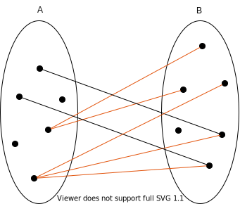
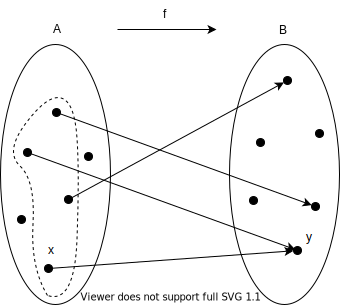
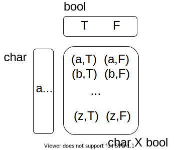
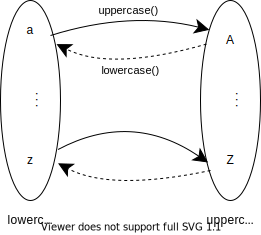
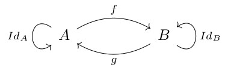
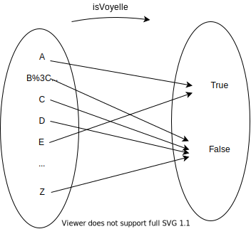
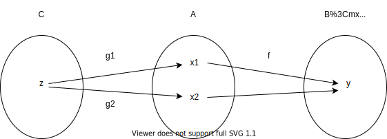

Relations, fonctions
Une relation entre deux ensembles est la description de liens entre les éléments du premier ensemble et ceux du deuxième. Parmi toutes les relations possibles entre A et B, on définit la notion d'application, ou de fonction. Un des deux ensembles est appelé ensemble de départ, l'autre est appelé ensemble d'arrivée.
Une relation est une fonction si un élément de l'ensemble de départ est en relation avec au plus un élément de l'ensemble d'arrivée.
Le schéma précédent ne représente pas une fonction de A vers B, car les relations en rouge ne respectent pas cette condition.
Cette restriction n'est pas gratuite, car elle correspond à nos besoins les plus fréquents, où on est amené à étudier la valeur d'une chose en fonction d'une autre (par exemple la position d'un solide en fonction du temps : ensemble de départ = tous les instants possibles ; ensemble d'arrivée = la position du solide ; à un instant donné, un solide ne peut pas avoir deux positions différentes).  Ce schéma représente bien une fonction.
On dit que y est l'image de x, et que x est l'antécédent de y.
A est appelé l'ensemble de départ de la fonction, B l'ensemble d'arrivée.
L'ensemble en pointillé est son domaine de définition (sous-ensemble de l'ensemble de départ tel que tous ses éléments ont une image).
On parle de relation entre deux ensembles A et B, et d'une fonction d'un ensemble A vers un ensemble B.
Définition d'une fonction
En utilisant la théorie des ensembles, une fonction est définie comme un sous-ensemble du produit cartésien.Par exemple la fonction
isVoyelle(), qui renvoie true si un caractère est une voyelle et false sinon.

Parmi tous les couples du produit cartésien, on en choisit un certain nombre, ce qui permet de définir la fonction sans ambiguité.
En utilisant les ensembles, une fonction est donc définie en utilisant les éléments des ensembles. Si on se place dans
Ens, la catégorie des ensembles, on n'a plus cette possibilité. Dans cette catégorie, un ensemble est un objet, on ne sait rien des éléments qu'il contient. Une fonction est juste représentée par une flèche. On va voir qu'il est malgré tout possible d'étudier les propriétés d'une fonction en étudiant comment elles se composent entre elles.
Bijection, isomorphisme
Les fonctions les plus simples à étudier sont les bijections.Une application
f est bijective si et seulement si tout élément de son ensemble d'arrivée a un et un seul antécédent, c'est-à-dire est image d'exactement un élément du domaine de définition de f.
Cette définition équivaut à dire qu'il existe une application inverse, notée
f -1 telle que
Pour tout élément
x de l'ensemble de définition, f -1 o f (x) = x
Dans ce cas, on a aussi : pour tout élément
y de l'ensemble d'arrivée, f o f -1 (y) = y

En utilisant les catégories, une fonction ayant cette propriété s'appelle un isomorphisme.
s'exprime par :
Une flèche allant de l'objet A vers l'objet B est un isomorphisme s'il existe une flèche g (que l'on aurait aussi pu noter f -1) telle que
g o f = IdA
et
f o g = IdB

On voit qu'en utilisant la théorie des ensembles, on utilise les éléments des ensembles pour définir la propriété, alors qu'en utilisant la théorie des catégories, on ne parle que de composition et d'identité.
Cette définition reste valable dans toute catégorie, pas seulement pour la catégorie des ensembles.
Une fonction peut ne pas être bijective pour deux raisons.
Injections, monomorphismes
Raison 1 : si plusieurs éléments du domaine de définition ont la même image.  Dans ce cas, on a une perte d'information, on ne peut pas reconstituer l'ensemble de définition à partir de l'ensemble d'arrivée.Une fonction qui n'a pas cette caractéristique est appelée une injection.
Pour caractériser cette propriété en utilisant la théorie des ensembles, on dit qu'une fonction f est injective si
Pour tout élément x1 et x2 de son domaine de définition,
f(x1) = f(x2) entraîne que x1 = x2
La propriété équivalente dans la théorie des catégories se nomme monomorphisme.
Comment exprimer cette propriété sans rien connaître de l'intérieur des ensembles ? En utilisant la composition.
On a une flèche
f, qui va d'un objet A vers un objet B, et on cherche à savoir quelle condition elle vérifie pour être un monomorphisme.
On se place dans la catégorie des ensembles ;
A et B représentent donc des ensembles, et f est une fonction, et on construit une situation où f n'est pas injective.
On imagine deux fonctions
g1 et g2 qui vont d'un autre ensemble C vers A ; on les imagine en tout point égales, sauf en un point z. f, qui n'est pas injective, peut tout à fait envoyer les points x1 et x2 vers le même élément y.

Cette situation nous donne la définition d'un monomorphisme :
Une fonction
f est un monomorphisme si, pour tout objet C et pour toutes fonctions g1 et g2 allant de C vers A,
f o g2 = f o g1 entraîne g1 = g2
Cette propriété, valable dans toute catégorie, se traduit dans la catégorie des ensemble par l'injectivité.
Surjection, épimorphisme
La deuxième raison pour qu'une application ne soit pas bijective est que l'image de la fonction ne couvre pas tout l'ensemble d'arrivée.On dit que la fonction est surjective si cela ne peut pas se produire. ; voir un exemple sur Wikipedia.
Cette propriété peut aussi s'exprimer en utilisant uniquement la composition, voir les notes du cours de Bartosz Milewski, paragraphe "Epimorphism".